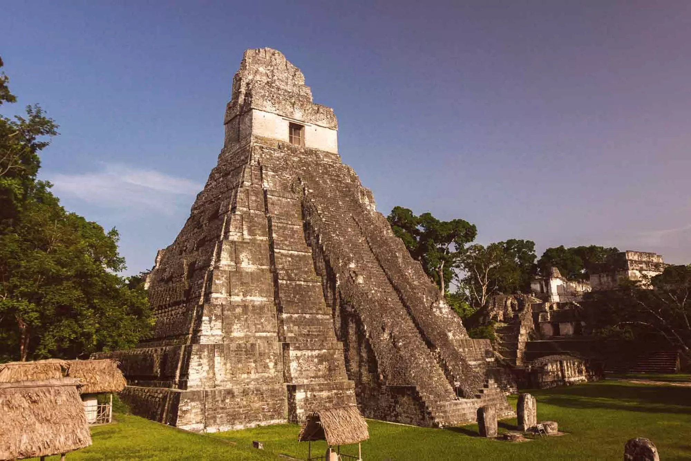

Tradiciones, costumbres y culturas de Guatemala
La riqueza cultural de este país de América Central es inagotable. En este artículo te descubrimos sus principales tradiciones y costumbres, así como las diferentes etnias que han engrandecido su identidad y carácter único

Guatemala es uno de esos países aún desconocidos para el turismo mayoritario, por lo que muchos de sus encantos son todavía secretos para los viajeros que llegan al país. La cultura maya se sigue respirando en todos sus rincones, si bien no es la única, ya que si algo caracteriza la cultura guatemalteca es la variedad de etnias existentes —más de dos docenas—, que se dividen en cuatro grandes bloques: la cultura maya, la ladina, la xinka y la garífuna.
De estas grandes ramas se desprenden muchas de las costumbres y tradiciones guatemaltecas, y es precisamente a eso a lo que vamos a dedicar este artículo, en conocer un poquito mejor las singularidades del país. ¿Te vienes?
Cultura guatemalteca, la visión maya
Como hemos mencionado, en Guatemala existen cuatro grandes culturas que derivan de sus numerosas etnias. La mayoritaria es la maya pero las otras tres también han dejado un importante legado en el país y se siguen considerando muy relevantes.
La cultura guatemalteca maya es la más amplia y la más conocida tanto dentro del país como fuera de él. Las grandes ruinas mayas, como las del Parque Nacional de Tikal, son bien conocidas por los viajeros, y también el hecho de que los mayas no se encontraban solo en Guatemala, sino que se extendían también por México, Belice y las regiones de Honduras y El Salvador.
